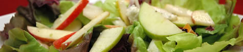
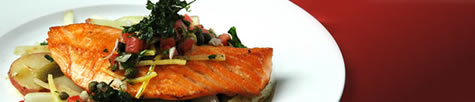
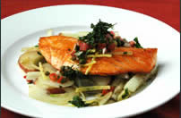

Cozinheiro joão
Petiscos

- - Porção de batata Frita -
- - Salada de Frutas com molho especial -
- - Porção de mini pastel -
- - porção de frango a passarinho -
- - sopa de lentilha com pão caseiro -
- - porção de aneis de cebola -
Entradas

- - Macarrão a molho vermelho com fatias de linguiça -
- - Salada de Frutas com file de frango grelhado -
- - Bife acebolado com arroz branco e batata frita -
- - Frango a passarinho com batata frita e arroz branco com feijão tropeiro -
- - Cação Frito com batata assada junto de arroz branco e molho especial -
- - File de frango grelhado com macarrão alho e olho -
Sobremesas
- - Torta de Baunilha com cobertura de chocolate e pedaços de Morango -
- - Torta de Limão com cobertura de limão com pedaços de Maracuja -
- - Bolo de Maracuja com Cobertura de brigadeiro de limão com pedaços de Morango -
- - Bolo de Fuba com gotas de chocolate e cobertura de brigadeiro -
- - Bolo de Morango com cobertura de chocolate branco com limão ralado -
- - Páve de Chocolate branco com Brigadeiro com pedaços de Maracuja -
Jantares

- - Frango à parmegiana com Arroz branco Carioca e batata Frita -
- - Bife Grelhado com Arroz branco e feijão preto e ovo cozido -
- - Macarrão a molho branco com frango desfiado -
- - File de salmão com tomates refogados acompanhado de salada de frutas com aneis cebola -
- - Lasanha de Presunto e queijo com Bife empanado -
- - churrasco de Carne bovina com queijo coalho e pão de alho -